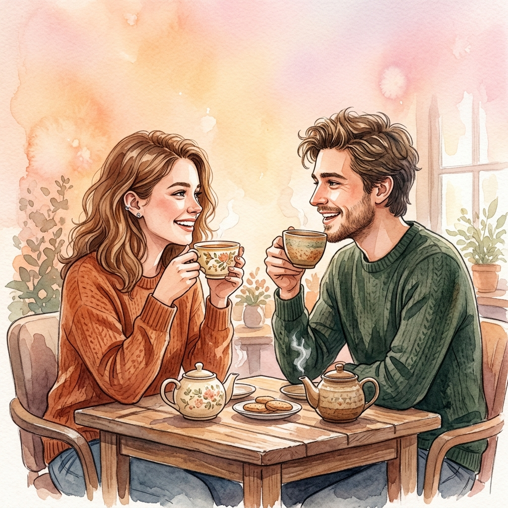

기계적인 스와이프와 스펙 중심의 줄세우기에 지치셨나요? 이제 따뜻한 교감과 철저한 안전 검증이 갖춰진 공간에서 신뢰할 수 있는 메이트를 만나보세요.

기존 소개팅 서비스에서 받았던 스트레스 요인(원인 블록)을 잡고 화면 밖으로 던지거나,당사가 제시하는 대안적 가치(통통 튀는 파스텔 블록)와 마구 충돌시켜 보세요!
실시간 AI 가드로 로맨스 스캠 걱정 없는 초저지연 프라이빗 보이스 데이트를 모바일에서 만나보세요.